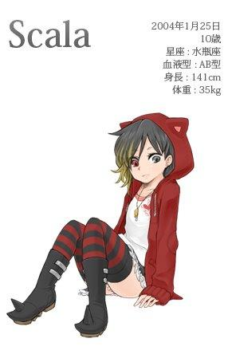
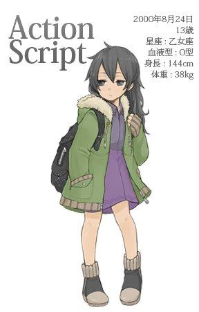

Imagine, whenJava、C++、Python、Ruby、PHP、C#、JS...programming languages become anime characters — what kind of scene would that be? Let's take a look together at what kinds of "beauties" each programming language becomes under the pen of Japanese author Masato Watanabe!
Java
She is like the taciturn girl who appears in Kenji Miyazawa's "Be Not Defeated by the Rain". Since childhood, she was treated as an idiot because of traits such as being slow and having a huge appetite. From the start of elementary school, she joined the track-and-field club and kept running, often achieving good results in middle- and long-distance races, giving people a lively impression. She is a very hardworking girl.
Her family circumstances were not good. Her father, Sun, was a talented artist but was not good at managing money. When she was 14, he passed away from illness caused by debt and overwork. She was adopted by Uncle Oracle. At that time, there was a dispute with Uncle Google over custody of her, which even ended up in court.
While the people around her worried whether she would be devastated in such a situation during her adolescence, she remained calm and continued her daily running practice.
Plain, earnest, and hardly clever — after entering high school, perhaps she began to care a little about the opposite sex. Someone spotted her secretly imitating other girls' fashionable clothes while walking in the street. Although she receives negative comments such as "She works hard, but maybe she's a bit out of style" and "That outfit doesn't match the impression of Java," there are also many people who feel "Surprisingly moe?" and are well-disposed toward her.
She likes coffee and only drinks Indonesian coffee. She once said, "I like coffee more than three meals a day," which makes people worry a little: "Is this okay for her health?"

C++
With slender legs and well-proportioned features, she is called "the IT industry's premier beauty" by many. She is also famous for her talents in flower arrangement, tea ceremony, piano, violin, judo, kendo, aikido, and so on.
Most of her fans are very fanatical, and there even exists a fan club called the "Dark Legion." The Dark Legion is a huge organization second only to the Freemasons, and ordinary people cannot join. It is said that if you can answer extremely fanatical questions about her, a legion member will notice and ask, "Would you like to enter the Dark Legion?"
Her paternal half-sister, Objective-C, devoted herself to playing the piano. Her dedication was noticed by IT genius Steve Jobs (also called the Purple Rose by some), and she suddenly became a star. Meanwhile, C++ has long held the position of industry star because of her beauty and talent. The two sisters truly make a sharp contrast.
She is also famous for frequently changing her hairstyle and clothes according to her mood. Yesterday it was a kimono with black hair; today she appears with red hair in a Gothic style. Because of her transformations, even lighter fans are often amazed, saying, "Huh? Is this Miss C++ today?" When away from the industry, she often wears HYSTERIC GLAMOUR clothing in private.
Her office does not disclose her date of birth. Although there is a theory that she was born in 1983, this article adopts the widely circulated claim among some fans that she was born on October 14, 1985. There is also a plausible-sounding rumor that "she herself may not remember her birthday..." Rather than saying "It wouldn't be strange if Miss C++ couldn't remember her own birthday," it is better seen as a sign of her innocent, carefree personality.

Python
She is a sheltered young lady raised by Father Guido. She is from Amsterdam, the Netherlands, but moved to the United States when she was little. Her father also uses English at home, so she cannot speak much Dutch.
Her personality is easygoing. Most famous is when she heard C++ announce, "I want to go on a trip to change my image. I'll be back in 200x," and then leave on a journey (in the end, she came back in 2011...). She then declared, "I'll also go on a little trip and come back in the year 3000," and then left for several years without returning.
Although she has such careless actions, thanks to Father Guido's education, which was based on the wish of "raising a child everyone loves," people who actually come into contact with her find her very approachable.
The other day, she came to work part-time at the author's friend's company (she appears to be attending university while working part-time). People praised her as "fully integrated into the work, truly adaptable, and a great help to us." She does not say much unnecessary and is courteous. She is praised as an exceptional presence in an industry full of "innocent and freedom-first" people.
She is said to be good at mathematics, and one often sees her easily solving difficult statistical problems. She likes to wear fresh outfits such as white one-piece dresses or light pink cardigans.
Actually, she also likes reptiles. It is said she keeps snakes at home. Fans often discuss topics such as "What names will she give her pets?" Most conclude, "It must be Monty." Whether it can fly is unknown. (This probably refers to the six-person British comedy group Monty Python's work The Flying Circus — translator's note.)

Ruby
She is a Japanese girl raised by Father Matsumoto. Because her birthday is on Christmas, the biggest worry of her life is that birthday gifts and Christmas gifts become one. Her birthplace is Matsue City, Shimane Prefecture. Apart from travel and work, she has never been to any other prefecture.
Because she was raised with a free-spirited education, she is active and curious. She is usually a straightforward good girl, but occasionally she also shows a side that likes pranks, which causes trouble for those around her. When seeing her, people often think of the IT industry's phrase "Just for Fun!"
When she was little, she spent her days running alone in the wild mountains. At age 10, she became friends with a girl named Rails, and her life began to change. While playing together, they stopped in front of an entertainment agency and talked about doing entertainment activities as a pair. They debuted under the stage name "Ruby and Rails," mainly working as magazine models and also appearing in TV commercials, so many people have heard their names.
People thought that experiencing various entertainment activities during this sentimental age would change her personality somewhat. However, in a recent conversation with her after a long time, they were surprised to find that she was still as free-spirited and unrestrained in her actions as before her entertainment activities. Although her behavior has become somewhat more composed, her mischievous and lively nature remains unchanged as before.
People think that since she is already a high school student, she should start wearing somewhat more mature clothes. Yet when it comes to dresses, she wears Mickey Mouse clothing just as she did when she was small. Although her short stature and baby face suit this kind of clothing well, is it really like a female high school student?
Her fans are also divided into two camps: those who want her to stay as she is now, and those who want to see her more mature.

PHP
A female robot created to strengthen the Web world. Her upright hair is used as an antenna to receive her master's commands at any time.
In order to give her a touch similar to humans, silicone is used to make her skin. Internally, she has a structure similar to a blade server, and multiple servers are often used for redundancy. Therefore, she weighs a bit more than a human.
When she first appeared, you could still see the skeleton at the movable joints, and her movements were stiff, very different from the image of a human. However, after six major version upgrades over 18 years, her behavior and speech have gradually become more human-like. Recently, she has reached the level of Hatsune Miku (still slightly uncanny compared to humans, but already quite natural).
Although she is clumsy and stumbles at work, because she follows the Three Laws of Robotics and obeys her master's orders, many people become her fans. The official website of her fan club, "PHPer!", allows easy membership without an entry fee, making it a large group with the largest membership in the IT industry.
There are also many people who reject her. Comments such as "Her behavior is physiologically hard to accept," "It would be better if she were smarter," and "I had a little contact with her, but I still felt she was very different from humans" are common.
She usually wears clothes bought from Forever12 and Shimura. She thinks that by buying cheap fast-fashion clothes, she can save the rest of the money for machine expenses. It can be said to be a standard robot's efficiency-first way of spending money. Perhaps one day she will care about fashion and worry about her appearance?

C#
A girl who received elite education at the famous Microsoft company and skipped grades to enter university at age 11, attracting much attention. She is also called "the strongest little girl in the IT world."
Because her name is similar to C++, for a while there was a widespread rumor, "Could she be an illegitimate child?" In fact, the two have no direct blood relationship. There are also reports that they are distant relatives, but the actual situation is unknown.
She seems to like mature behavior and dislikes playing like a child. There is a rumor that when she received a stuffed toy named Andy from her parents on her birthday, she said, "What is this? No sense. Don't want it."
However, her interest in food remains at the child stage. She has been spotted many times ordering a kids' meal in the school cafeteria. She does not like coffee; even sweet canned coffee makes her frown.
Although one occasionally sees her unexpectedly childish side, in most cases she is seen speaking and behaving politely. She is a child with both a mature side and a childish side. Because she is still growing, people often sigh when they see her, saying, "She's gotten taller," or "She looks a bit more adult now." They always look forward to what she will become by the next time they see her.
She often wears Shirley Temple dresses. It is said that she picks them out herself, and they suit her very well. Her cuteness makes everyone, male or female, become a fan of hers.
Her aspiration is to work not only under the umbrella of Microsoft, which raised and grew her, but also to be active throughout the entire IT industry after graduating from university. Although she did not explain the more detailed plan, it is said that she wants to create something that allows Apple and penguins to coexist harmoniously as well. Just what kind of thing will she make?

JavaScript
A 17-year-old girl who grew up in a disputed area. She often has a blank expression and always creates a certain sense of distance when talking with others.
Although her name is similar to Java, there is no blood relationship between the two. At that time, names like Java were popular, so her parents gave her a similar name. She herself does not seem to care much about her name, and sometimes also engages in activities under the pen name "ECMA." Occasionally she is called by the nickname "JS," but she cares even less about that and even openly ignores it.
Her life was very unfortunate. War broke out in her homeland as soon as she was born. Before she could even understand things, her mother passed away and she was separated from her father. Amid the willful struggles of adults, she learned to hide herself in a shell and to survive by protecting everything around her. While other girls her age experimented with various styles as they grew older, she ignored the words of those around her and continued to shut herself away alone in that shell. At the time, that was the only way to survive in such a harsh environment.
Because of this childhood, her way of speaking, thinking, and interacting with others was slightly different from that of other children. Many people, when talking to her, would worry about what to say. However, there were also those who saw her simple, single-minded way of thinking as "easy to approach" and "easy to understand in a way."
Now, her country is moving toward resolving conflicts and opening up new land for settlement. Although the adults are still willfully fighting among themselves, at least in recent years, there have been no wars of mutual hatred and slaughter like those in the past.
In her homeland, which has begun to revive, she should now be able to live happily, right? When will we see her laugh like other girls her age?

Perl
Perl was born in December 1987 at the home of the Walls, an American couple. Her father Larry was proficient in computers and linguistics, and her mother also specialized in medieval Renaissance studies and linguistics. Perl grew up surrounded by such highly educated parents.
Her father's education was strict, yet he also gave Perl a great deal of freedom. One phrase he often said during her upbringing was: "There's more than one way to do it."
When you think of something you want to achieve, there is not just one way to accomplish it. Various methods can be considered. This way of teaching from her father had a great influence on the formation of her character.
"What would happen if I did this?" ... "And what if I did it that way?" ... Spreading the wings of her curiosity as she grew up, she gradually discovered her talent for "invention." The peerless inventor, Perl, was born.
In the 20 years since she set out on the path of an inventor, her inventions have numbered as many as 128,890 (as of January 2014). Her inventions range from useless toys to beneficial inventions that solve many of the world's problems. The prototypes of all the items she invented have been donated to the CPAN Museum, where anyone can view them.
Even now, she continues to make new inventions she wants to create, regardless of practicality. She joked in an interview: "I'm more of a production machine for all sorts of junk than an inventor." Her toothy smile is very inspiring.
Perl is not very particular about clothing. Usually, because adjusting machinery is troublesome, she wears casual sporty clothes that are easy to move in. The down jacket she often wears recently was reportedly bought at WEGO in Ameyoko (a shopping street in Ueno, Tokyo). Her favorite food is strawberries. She says that during work, strawberries are the most suitable food for a brain tired from concentrating.

C Language
The goddess who supports this world is also called "Our Lady."
There is no definitive conclusion about C's date of birth. Some say she existed before the Genesis (around January 1, 1970), while others say she was born a little later, around 1972.
She is a goddess, so thinking things like "if she was born around 1970, what's her current age?" is an act of disbelief. You must never have such thoughts.
Her name is the third letter of the alphabet, "C." According to records in the New Testament, there was a goddess called B before her. Some materials indicate that "Ken and Dennis created B, but were not satisfied with it. Later, Dennis and others worked together to create C."
There are many followers of her throughout the world. However, for some time there was no bible that accurately conveyed her teachings. Although the psalms left by Dennis and Brian originally carried this mission, people desired more explicit words. Later, various learned individuals compiled and organized various anecdotes into a bible that correctly conveyed her doctrine.
This book has been revised many times to this day. Depending on the year of revision, it is called C89, C99, C11, and so on.
Ordinary people cannot directly speak with C. Only those who have accumulated sufficient training are permitted to communicate with C.
The training is extremely strict. One must understand problems such as "pointers to pointers," and is required to achieve 100% success in solving the "malloc/free" problem, which is difficult to overcome no matter how hard one trains. Because of this background, very few people are truly able to have daily conversations with her.
Yet, through the hands of those who can communicate with her, a wide variety of knowledge and technology has been born in the world. Even if you have never seen her appearance, her loving kindness truly surrounds you every day.
Visual Basic
Her surname is Basic, her given name is Visual, and many people call her by her nickname: VB. Her pet name is Ruby (not related to that Ruby). From a young age, she was noticed by a certain wealthy man (whose name cannot be mentioned), and her whole family came to live under his care. At that time, her name changed many times before settling on the current one. She has a rather complicated family background.
As for why the wealthy man wanted to adopt her when she was still very young, according to unreliable rumors, he saw in her the shadow of Basic, a woman he had long admired. Carrying out what is called the "Genji plan"—adopting a child who resembles the woman one admires.
Young people may not know this, but Basic was the cover model of *Basic Magazine for Microcomputers* and was a Madonna-like woman that everyone yearned for at the time. In fact, many people I know were enchanted by her in their youth.
While receiving a strict education, VB also developed her nature through hobbies. She has a unique talent for handmade crafts and ornaments. Watching her make beaded decorations is like magic. Just by moving her hands, she can produce a necklace in an instant.
When she was 10, a new adopted daughter came to the wealthy man's home. (The one everyone often refers to.)
Because of this, she is now working hard at home to be a good older sister. However, being naturally timid and not good at speaking, she is often lectured instead by her sister, who is 10 years younger, serious, and speaks for a long time. Hang in there, Miss VB.
When she was little, VB wore Emily Temple clothes bought by her parents, but now she more often wears Lowrys Farm clothes she buys herself. She will graduate from university and enter society this year. Her goal is to develop a mature style unique to Miss VB.

R
She was born on February 29, 2000. It was that cursed day, once every 400 years, that still remains in people's memories. Although she was born on a very unlucky day, she herself grew into a lovable and intelligent child.
Her mother is named S. Although in the mythological world C was born after B, her name is R, one letter before S. These are all names that are hard to find using Google. (Note: because they are too short!)
Her mother was very good at mathematics and worked as an assistant to a statistician. R inherited this trait. She was good at math from a young age, and by elementary school she had already reached the level of quickly solving high school math problems. In addition, she was also interested in geometric figures. People often saw her drawing various 2D and 3D shapes, and after finishing, she would smile with a satisfied and delighted expression all by herself. She was a slightly strange child.
While R is good at mathematics, she is somewhat lacking in verbal expression. The other day when she was interviewed, she tried to answer the questions but could not find suitable words. Instead, she drew a scatter plot with a swoosh and said, "Something like this." Perhaps in her eyes, expressing things in words in this world is as complex as folding complicated mathematical formulas.
She is not particular about clothing, often wearing loose-fitting one-piece dresses and shirts.
She has no awareness of questions such as how much the clothes her parents bought her cost or where they were bought. However, she is very concerned about the angle at which the hem of a recently purchased flared skirt spreads open.
Her dream is to become a statistician in the future. Although she is only 14, she often mingles among university students and solves various problems every day. Recently, universities alone have not been enough, so she has asked her parents and now comes and goes through various research institutes.

Scala
There was a long religious war between the O faith and the F faith. Scala is a heretic born from the marriage of a priest and a nun from these two religions. Shortly after her birth, she immediately caused intense opposition between the two factions. Sensing danger, her parents sent her to the JVM school's private instructor, Mr. Odersky, to be raised as an adopted daughter.
Now, the relationship between the two religions has shown signs of improvement compared to before, and some people view her as a symbol of the fusion of the two factions. However, many still harbor strong antagonism, and arguments concerning her existence often arise. People of the F faith believe that her existence does not fully grasp the essence of F, while people of the O faith find it hard to understand her due to the mixture of F.
Although she was born into such a complicated environment, she herself is not concerned about her surroundings. Instead, she calmly goes to both churches to get bread and lives strongly. Many people are moved by her innocent and carefree attitude and become her fans.
Scala seems to like Miss Java, who attends the senior division of the same school, and often goes to see her during breaks. Miss Java does not dislike her either, and often acts like a big sister, letting her sit on her lap and gently stroking her head. Although Scala made Java very angry when she tied up Java's beloved Duke doll with red string as a prank, apart from that, they rarely quarreled. The two are like biological sisters.
Scala, with her knowledgeable father and kind older sister, may now—despite her complicated origins—actually be living quite happily.
She likes bright colors and patterns in clothing and often wears Algonquin clothes. Although they are somewhat distinctive fashions, they look strangely natural on her, since she was born with a distinctive personality.

Shell
A fairy sighted several years after the Genesis (January 1, 1970). She lives in households and has a lifestyle similar to a brownie. When asked to do housework or odd jobs, she is a gentle child who replies twice and accepts.
They rarely appear in places where humans exist. Since they do not speak human languages, they communicate by writing letters. If a request is phrased vaguely, it may lead to misunderstandings and cause serious trouble. The trick is to clearly write out the tasks you want her to do in order, like "do that | do this > put it here." If she understands the request well, she will handle everything during the night. If she completes the work nicely, do not forget to leave a sugar cube as a token of thanks on the following night.
There are various races in Shell. Among the confirmed races, the well-known ones are "ba", "c", "k", "tc", "z", and so on. Their clothing differs by race. What I witnessed was an individual about 60cm tall wearing Burberry children's clothing. Probably the most frequently sighted race is "ba". Personally, I would also like to encounter the "z" race, which is taller and has pointy ears. Although I now know how to write letters, I have never seen one in person.
Although they tend to live in the same house, few people have the chance to see them, nor do they know how to encounter them.
There is a saying that if you perform the ritual of programming every day until midnight, barely lifting your head with the help of caffeine, and suddenly look at the screen, you can see her figure. Indeed, I encountered her while staying up late programming at the company.
There are many Shell individuals; it is said that every household has one. In everyone's home, there may actually be many of them living and waiting for letters.

ActionScript
A 13-year-old girl born in a disputed region.
Her father was a famous designer, but he was caught up in the war and died when she was 5. Fortunately, she was still young at that time, and Uncle Adobe, who adopted her, raised her with great care, leaving no deep scars in her heart. Uncle and her father were both designers. Perhaps in her memory, she has confused the two as one person.
The country where she lives is a neighbor to the country where JavaScript lives. Both countries are composed of the same ECMA ethnic group. To foreigners, JavaScript and ActionScript look very similar. Indeed, looking at their childhood photos, their skin color and facial features are very alike, but what about photos of them now that they have grown up?
She strives with the motto "work hard for the motherland and Uncle," yet her efforts often go unrewarded. She is a child with not-so-good luck.
When there were widespread rumors that a new common language would be implemented in the disputed region, she hoped to contribute to the upcoming era of peace and started learning the language earlier than anyone else. However, just when she finally managed to speak it well, the proposal to adopt the language as the common language fell through.
When she first started learning mobile design, she thought that becoming strong in mobile would be useful for Uncle's work. It could also reduce the motherland's external debt. While she was working hard with such thoughts, the company run by Uncle was forced to terminate deals by a giant mobile device company, and work related to mobile also sharply decreased.
She, who works very hard but often receives no reward, stands on this land where even now no end to the conflict is in sight, and continues to move forward.

One day, her efforts will be rewarded, right? I wish her safety ten years from now, and that she continues to move forward and live.
Source: http://www.oschina.net/news/53201/programming-language-as-a-girl
Click me to share notes
<p style="font-size:14px;">Notes must be an expansion of this article's content!</p><br> <p style="font-size:12px;"><a href="../tougao.html" target="_blank">To submit an article, click here</a></p> <p style="font-size:14px;"><a href="./runoob-user-test-intro.html" target="_blank">How to get a registration invitation code</a></p> <h3 class="text-muted"><i class="fa fa-info-circle" aria-hidden="true"></i> You must <a href=".." class="runoob-pop">log in</a> before sharing notes!</h3> <p><a href="./runoob-user-test-intro.html" target="_blank">How to get a registration invitation code</a></p>